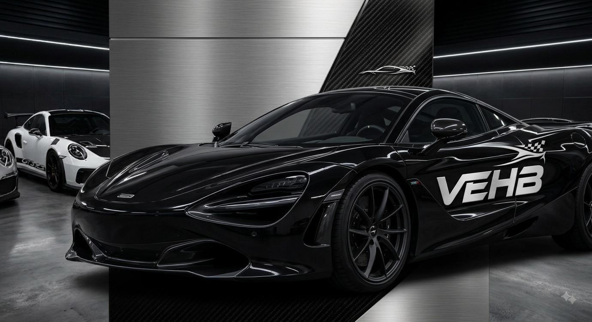

A Era dos Hypercars Elétricos
Por: Victor Emanuel
Os hipercarros elétricos estão quebrando recordes de aceleração de 0 a 100 km/h em menos de 2 segundos. A tecnologia de baterias revolucionou o desempenho nas pistas.
Compartilhando paixão, velocidade e tecnologia automotiva
Por: Victor Emanuel
Os hipercarros elétricos estão quebrando recordes de aceleração de 0 a 100 km/h em menos de 2 segundos. A tecnologia de baterias revolucionou o desempenho nas pistas.

Por: Victor Emanuel
As asas móveis e os difusores ajustáveis usam sensores computacionalmente ajustados para maximizar a pressão aerodinâmica em altas velocidades.
Fonte: AutoEsporte

Por: Victor Emanuel
Apesar da eletrificação, o ronco inconfundível dos motores aspirados de alta rotação ainda encanta entusiastas em todo o mundo.
Fonte: Quatro Rodas

Por: Victor Emanuel
Originalmente desenvolvida para a indústria aeroespacial, a fibra de carbono é indispensável nos monocoques e chassis dos carros esportivos modernos.
Fonte: TecMundo

Por: Victor Emanuel
Capazes de suportar temperaturas superiores a 1.000 °C sem perder a eficiência, esses freios garantem frenagens precisas em circuitos intensos.
Fonte: FlatOut

Por: Victor Emanuel
Com compostos especiais de borracha, os pneus semi-slick oferecem o nível máximo de aderência em pista seca sem perder a homologação para uso nas ruas.
Fonte: Racing Magazine